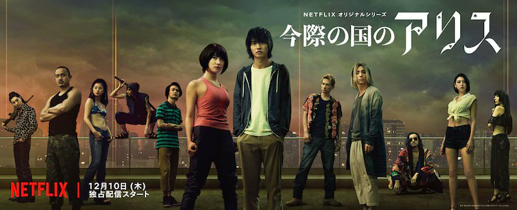
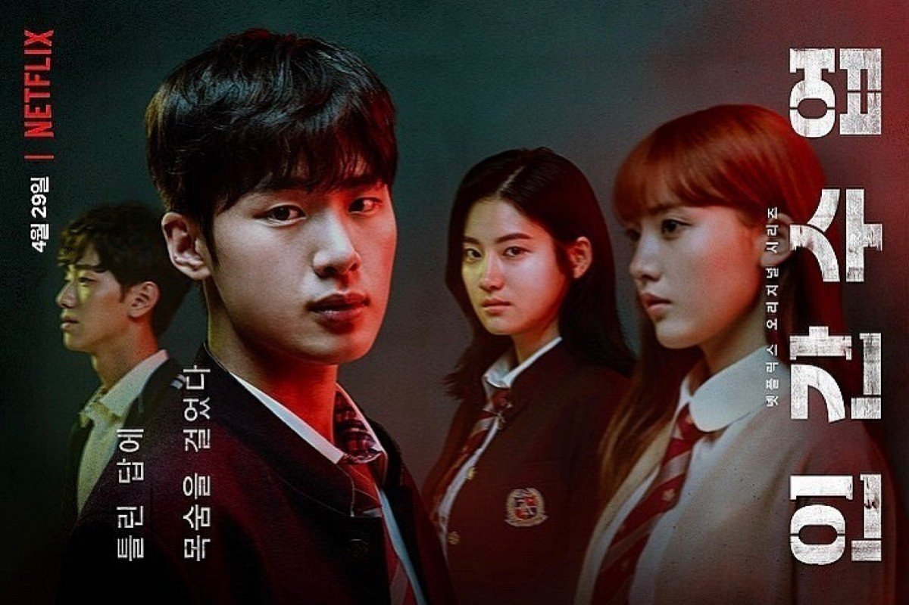
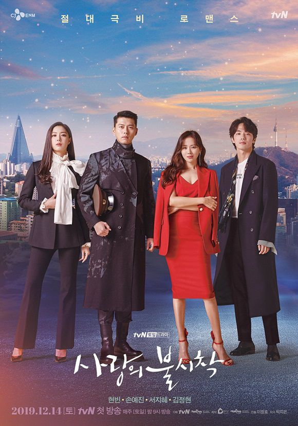
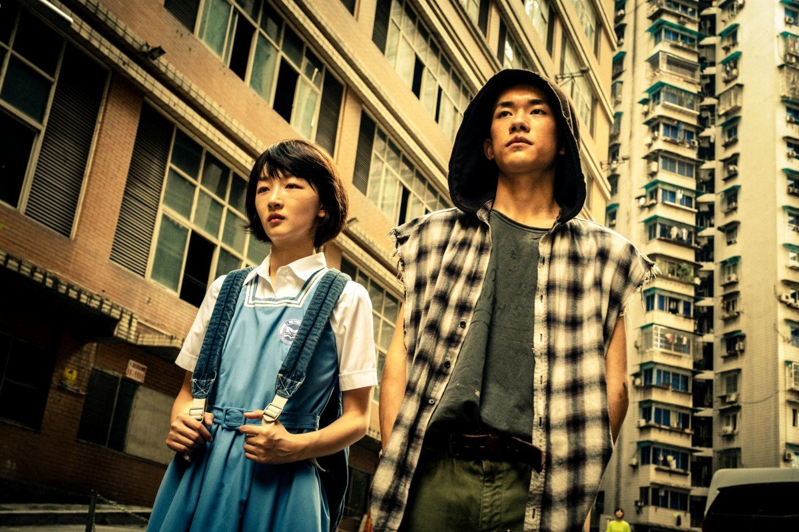
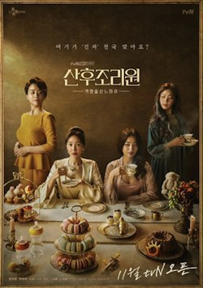

| Serier | Beskrivning | Bilder |
|---|---|---|
| Alice In Borderland | En välgjord japansk överlevnadsserie. Den är lite läskig och blodig, men ändå superbra. |
 |
| Extracurricular | En koreansk serie om ungdommar som tjärnar pengar på farliga sätt. |
 |
| Crash Landing on You | En koreansk serie om en sydkoreansk kvinna som råkar hamna i nordkorea och blir kär i en man där. |
 |
| Vincenzo | En italiensk mafia åker till Sydkorea för att ta ut gömd guld under en fattig byggnad. |
|
| Better Days | En kinesisk film om mobbning. |  |
| Birthcare Center | En koreansk serie om mamornas liv när de får barn. |  |